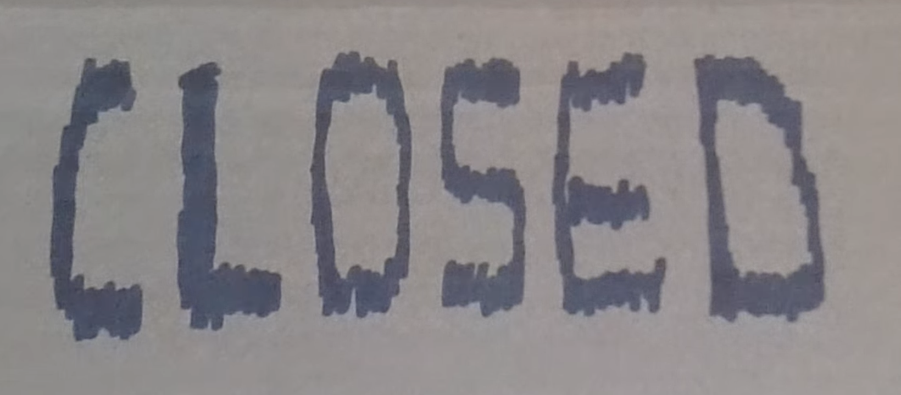

How it started
One afternoon Colin grabbed a marker and a piece of cardboard and wrote CLOSED. The letters came out shaky, narrow and full of character, so we turned them into a font.

CLOSED
Colin filled each letter with a marker going up and down, so the tops and bottoms of his strokes are scalloped while the stems stay smooth. Every letter, number and symbol in the font is inked the same way by a simulated marker, starting from Colin's own C, L, O, S, E and D. Lowercase is set as slightly smaller capitals.